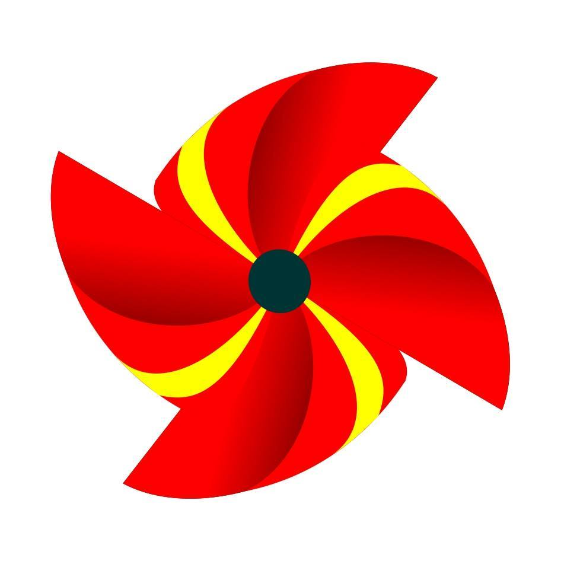

<ion-view view-title="Informações">
  <!-- <ion-nav-bar class="titulo">
  </ion-nav-bar> -->
  <ion-content class="padding mainbackground">
    <div class="FAQ">
      <h3>FAQ</h3>
      <p>Esta seção é destinada a esclarecer o funcionamento do aplicativo.
        Abaixo estarão descritas algumas dicas de funcionamento.</p>
    </div>
    <br>
    <div class="FAQ">
      <h3>Como Funciona</h3>
      <p>Na guia Procurar você pode realizar buscas diretas através de Categorias, Comunidades ou exibindo uma lista de Todos os Elementos.
      Como também pode realizar uma busca específica, neste caso basta selecionar uma comunidade e uma categoria e clicar no botão procurar.</p>
    </div>

    <br>

    <div class="FAQ">
      <h3>Colaboradores</h3>
        <div class="colaboradores">
          <div class="imgContainer1">
            
          </div>
          <div class="nomeSobreLeds">
            <p>LEDS - Serra</p>
          </div>
          <div class="imgContainer2">
            
          </div>
          <div class="nomeSobreLabitec">
            <p>Labitec</p>
          </div>
          <div class="imgContainer3">
            
          </div>
          <div class="nomeSobreAtelie">
            <p>Ateliê de Ideias</p>
          </div>

        </div>
    </div>


  </ion-content>
</ion-view>
